Exploración del cerebro: recorrido por las estructuras del sistema nervioso
Objetivos de aprendizaje
Al finalizar este capítulo:
- comprenderás la organización y los componentes principales del sistema nervioso
- tendrás una noción de cómo fluye la información a través del sistema nervioso.
¿Qué hace el cerebro?
Todos nuestros pensamientos y acciones surgen de estructuras y procesos biológicos que actúan en conjunto para que podamos existir e interactuar satisfactoriamente con el mundo mediante conductas que nos permiten alimentarnos, hidratarnos y mantenernos a salvo. En este capítulo conoceremos las distintas partes del sistema nervioso que coordinan estas conductas.
Sin embargo, primero conviene considerar, en términos muy generales, qué hacen el cerebro y el sistema nervioso. Reciben información del mundo exterior y del cuerpo, y determinan cuál es la mejor acción que se puede realizar a continuación. Luego provocan cambios en el cuerpo que permiten llevarla a cabo, ya sea escapar de un león, atrapar una pelota o dormir.
En este capítulo exploraremos las estructuras, los circuitos y las células del sistema nervioso para comprender, a grandes rasgos, cómo fluye la información hacia el cerebro, dentro de él y desde él. Conocerás un poco acerca de cómo estas estructuras y células generan conductas y respuestas internas que nos permiten adaptarnos e interactuar satisfactoriamente con lo que sucede a nuestro alrededor y en nuestro interior. En los capítulos siguientes del libro aprenderás mucho más sobre este tema.
El sistema nervioso como computadora
El sistema nervioso es la red de neuronas y células de sostén, denominadas glía, que se ocupa de detectar algo, transmitir esa información, integrarla con otra información y enviar una instrucción a otras partes del cuerpo para que actúen en consecuencia. En otras palabras, nuestro sistema nervioso se asemeja a una computadora. Recibe una entrada, realiza un cómputo sobre ella (mediante los programas que se ejecutan en esa computadora y que determinan qué cómputo se realiza) y genera una salida. De hecho, cada parte del sistema nervioso realiza esta misma tarea de «entrada–cómputo–salida», aunque utiliza distintas entradas, ejecuta diferentes programas y genera distintas salidas. El sistema nervioso en su conjunto podría detectar la información visual de que se acerca un león, calcular que sería conveniente escapar y generar patrones de contracción muscular en las piernas para que corras. A escala microscópica, una sola célula nerviosa, o neurona, podría recibir entradas que contienen información sobre la luz que incide en distintos puntos de la retina e integrar esa información para concluir —y transmitir— que la luz que incidía en la retina formaba una línea vertical. El programa que ejecuta una célula o estructura determinada del sistema nervioso depende de cómo se conecta con otras células o estructuras y de las reglas biológicas que rigen esas conexiones y sus cambios a lo largo del tiempo. Aprenderemos mucho más sobre esto en los próximos capítulos del libro.
Pero, antes que nada, necesitamos orientarnos en el sistema nervioso. Este capítulo ofrece una introducción a su anatomía. Te ayudará a comprender su organización y te presentará la función de algunos de sus componentes principales. En capítulos posteriores aprenderás mucho más sobre cómo estas estructuras cumplen sus funciones.
Partes del sistema nervioso
El sistema nervioso está compuesto por el sistema nervioso central y el sistema nervioso periférico (Figura 2.1).
El sistema nervioso central (SNC) comprende el encéfalo y la médula espinal, mientras que el sistema nervioso periférico (SNP) es la red de neuronas y nervios situados fuera de estas dos estructuras que conecta el SNC con el resto del cuerpo. Incluye la mayoría de los nervios craneales, que se conectan con el encéfalo, y los nervios espinales, que transportan información hacia la médula espinal y desde ella. El SNP proporciona la entrada al SNC, que determina qué hacer con esa información y envía salidas de regreso al cuerpo a través del SNP. La simetría con respecto a la línea media es una característica general de la organización del sistema nervioso.
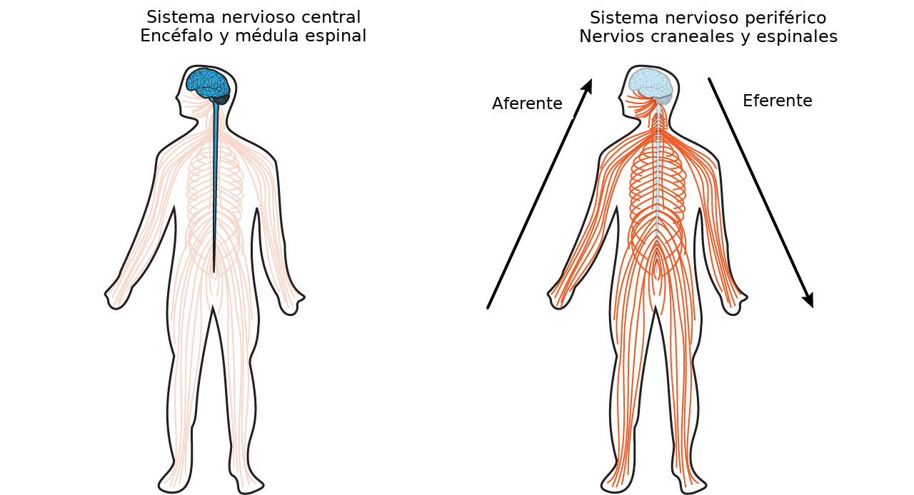
El sistema nervioso periférico
El SNP se puede subdividir en dos partes: los sistemas nerviosos somático y autónomo. A su vez, el sistema nervioso autónomo se puede subdividir en otros tres componentes: las divisiones simpática y parasimpática, y el sistema nervioso entérico.

El sistema nervioso somático
El sistema nervioso somático se ocupa de las interacciones con el ambiente externo: percibe el mundo exterior mediante neuronas sensitivas y envía señales a través de neuronas motoras para controlar los músculos esqueléticos y generar movimientos y conductas que interactúan con ese mundo. Muchas de estas conductas son voluntarias y se inician mediante procesos complejos de toma de decisiones en el cerebro. Oís una voz que llama, interpretás el lenguaje y te orientás hacia el sonido de tu nombre. Sin embargo, el sistema nervioso somático también puede generar movimientos involuntarios mediante reflejos, en los cuales una entrada sensitiva activa una respuesta motora sin control voluntario. Los reflejos más simples implican una única neurona sensitiva que activa una única neurona motora. Un ejemplo es el reflejo de estiramiento muscular, en el que las neuronas sensitivas detectan el estiramiento de un músculo y hacen que las neuronas motoras activen ese mismo músculo para aumentar su contracción y contrarrestar el estiramiento. Así, si te inclinás hacia un lado y estirás los músculos posturales del tronco, este reflejo contrae esos músculos y te mantiene estable. O bien, si alguien añade un peso considerable a algo que llevás y estira los músculos del brazo, estos se contraen para que no dejes caer la carga. Incluso estos reflejos tan simples implican la transferencia de información del SNP al SNC, ya que la conexión o sinapsis entre estas dos neuronas ocurre en la médula espinal, que forma parte del SNC.
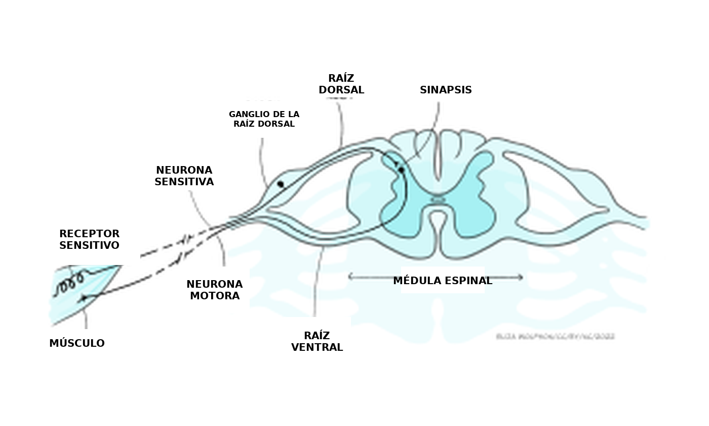
De hecho, no hay neuronas que se encuentren por completo en el sistema nervioso somático periférico: las neuronas sensitivas somáticas establecen su primera sinapsis en el SNC, mientras que los cuerpos celulares de las neuronas motoras somáticas se encuentran en el SNC y sus axones salen de él para inervar los músculos.
Estas vías aferentes (que transportan información sensitiva hacia el interior del SNC) y eferentes (que transportan información motora hacia el exterior del SNC) forman los nervios craneales y los nervios espinales. (Los nervios son simplemente haces de axones: las prolongaciones largas que posee cada neurona para transportar impulsos eléctricos). Los nervios craneales inervan la cabeza y transportan información —entre ella, la relativa al olfato, el gusto, la audición y el control de los músculos faciales— directamente entre sus estructuras diana y el tronco encefálico. Los nervios espinales transportan información entre la piel, los músculos esqueléticos y la médula espinal. Existen 31 pares de nervios espinales, que llevan información sensitiva y motora desde partes específicas del cuerpo hacia la médula espinal. La región de piel inervada por aferentes de un nervio espinal determinado se denomina dermatoma, mientras que el conjunto de músculos contactados por eferentes de un solo nervio se denomina miotoma.

Los componentes sensitivo y motor del nervio se separan al llegar a la médula espinal. Las aferencias sensitivas ingresan por la raíz dorsal de la médula espinal y sus cuerpos celulares forman el ganglio de la raíz dorsal, justo fuera de la médula. Las neuronas motoras salen de la médula espinal por la raíz ventral (Figura 2.3) antes de establecer sinapsis en las uniones neuromusculares del músculo esquelético, donde liberan acetilcolina para iniciar la contracción muscular (véase la sección Interacción con el mundo).
El sistema nervioso autónomo
A diferencia del control más voluntario mediado por el sistema nervioso somático, el sistema nervioso autónomo interviene en las interacciones con el medio interno del cuerpo, por ejemplo, mediante la regulación de la frecuencia cardíaca. En general, estas interacciones son reflejos involuntarios, aunque están moduladas por el cerebro, y parte de esta regulación puede realizarse de manera consciente; por ejemplo, las personas pueden entrenarse para ejercer cierto control sobre su frecuencia cardíaca. Al igual que en el sistema nervioso somático, las neuronas sensitivas proporcionan al SNC información sobre los órganos internos y las neuronas motoras producen efectos en ellos, a menudo mediante la modulación del tono del músculo liso, por ejemplo, para modificar el diámetro de los vasos sanguíneos. Además del sistema nervioso autónomo, ciertas vías no neuronales también pueden enviar al cerebro información sobre el estado interno del cuerpo. Por ejemplo, las neuronas de una región cerebral denominada hipotálamo pueden detectar aumentos de la temperatura de la sangre y activar circuitos cerebrales que, a su vez, pueden activar el sistema nervioso autónomo, aumentar la dilatación de los vasos sanguíneos de la piel y activar las glándulas sudoríparas.
Los sistemas nerviosos simpático, parasimpático y entérico
Consideremos ahora los distintos componentes del sistema nervioso autónomo:
El sistema nervioso entérico es una extensa red de neuronas inserta en la pared del sistema gastrointestinal, desde el esófago hasta el ano, que regula la motilidad y la secreción de hormonas. En los seres humanos contiene alrededor de 500 millones de neuronas, cifra equivalente al 0,5 % de las que se encuentran en el cerebro y 5 veces superior a la cantidad presente en la médula espinal. Puede funcionar sin recibir información del cerebro, aunque también puede ser regulado por señales descendentes.
Las divisiones simpática y parasimpática del sistema nervioso autónomo suelen considerarse, respectivamente, los sistemas de «lucha o huida» y de «reposo y digestión», ya que generan respuestas motoras que, en términos generales, favorecen la acción o la relajación. Por ejemplo, la activación simpática aumenta la frecuencia cardíaca y el flujo sanguíneo hacia el cerebro, el corazón y los músculos esqueléticos, lo que prepara al cuerpo para actuar. Por el contrario, la activación del sistema nervioso parasimpático reduce la frecuencia cardíaca y el flujo sanguíneo hacia el cerebro, el corazón y los músculos esqueléticos; en cambio, dirige el flujo sanguíneo hacia el intestino y estimula la digestión.
Aunque resulta útil distinguir entre las funciones de «lucha o huida» y de «reposo y digestión» de ambos sistemas, el cuerpo no alterna de forma binaria entre la actividad de uno u otro. Su estado depende, más bien, del equilibrio entre la actividad de los dos sistemas en un momento dado. Además, este equilibrio no es uniforme en todo el cuerpo, como se desprende de la necesidad de regular de manera independiente distintos órganos; por ejemplo, para controlar la frecuencia cardíaca y el vaciamiento de la vejiga.
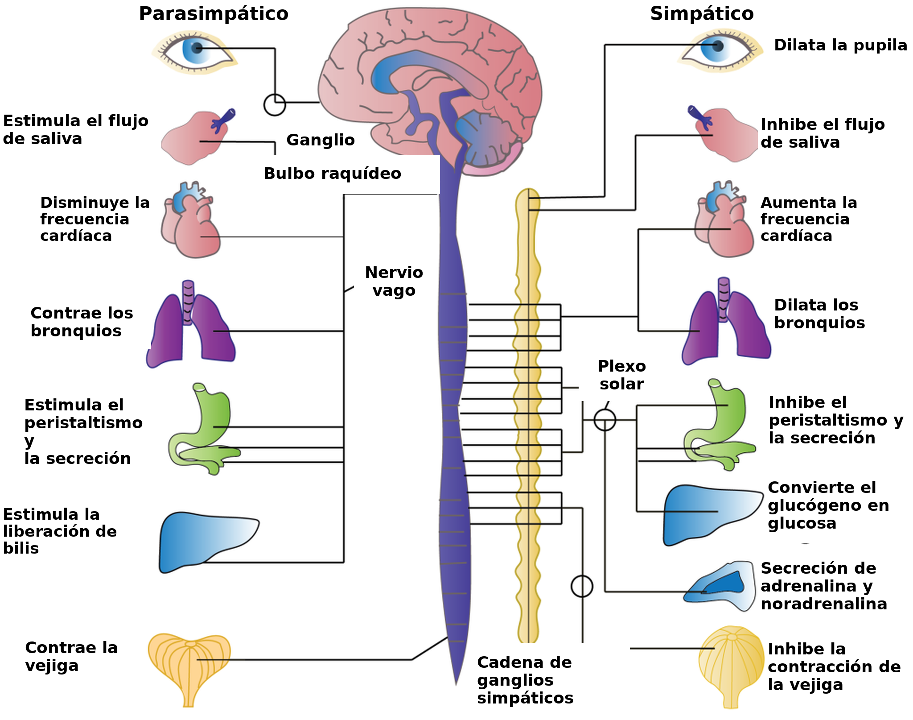
Las neuronas preganglionares simpáticas salen de las regiones torácica y lumbar de la médula espinal para establecer sinapsis en los ganglios de la cadena simpática, situados justo fuera de la médula espinal, o en los ganglios prevertebrales, entre ellos el plexo solar o los ganglios mesentéricos del abdomen. Las neuronas preganglionares utilizan acetilcolina como neurotransmisor. Las neuronas posganglionares —las neuronas motoras de la división simpática— utilizan noradrenalina como neurotransmisor y suelen recorrer los mismos nervios que el sistema nervioso somático [Nota: en Estados Unidos, la noradrenalina se denomina norepinephrine y la adrenalina, epinephrine].
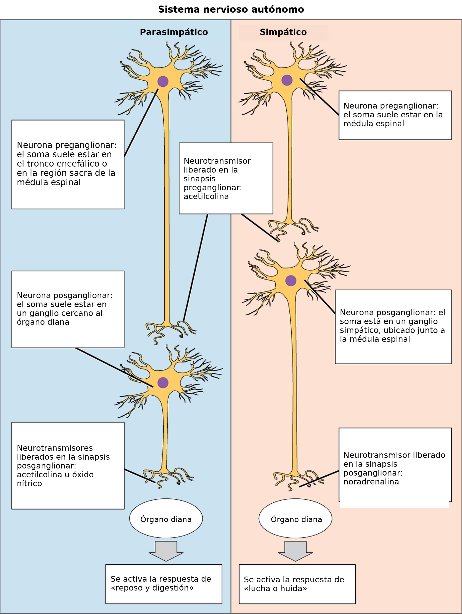
Las neuronas parasimpáticas salen del SNC a través de los nervios craneales o de las regiones sacras de la médula espinal. Estas neuronas establecen sinapsis en ganglios que, por lo general, se encuentran muy cerca de los órganos que inervan, por lo que las neuronas preganglionares parasimpáticas son mucho más largas que las posganglionares. La gran mayoría de las fibras parasimpáticas forman el nervio vago, que inerva la mayor parte de los órganos del tórax y el abdomen. Tanto las neuronas parasimpáticas preganglionares como las posganglionares utilizan acetilcolina como neurotransmisor.
Conceptos clave: sistema nervioso periférico
- El SNP lleva información sensitiva al SNC y envía instrucciones desde el sistema nervioso central para controlar las salidas motoras
- El SNP está compuesto por los sistemas nerviosos somático y autónomo, que se ocupan de las interacciones con los ambientes externo e interno, respectivamente
- El sistema nervioso autónomo comprende el sistema nervioso entérico del intestino y las divisiones simpática y parasimpática, que producen efectos ampliamente opuestos sobre los órganos internos
- Las neuronas sensitivas establecen su primera sinapsis en el SNC. Las neuronas motoras somáticas salen del SNC y liberan acetilcolina sobre los músculos esqueléticos, mientras que las neuronas autónomas establecen sinapsis con neuronas motoras en ganglios situados fuera del SNC
- La acetilcolina es el neurotransmisor liberado por las neuronas preganglionares y las neuronas motoras parasimpáticas, mientras que las neuronas motoras simpáticas liberan noradrenalina.
El sistema nervioso central
Orientaciones anatómicas
El SNC comprende el encéfalo y la médula espinal. Ambos, en particular el encéfalo, son estructuras 3D complejas. Por eso, antes de explorarlos, resulta útil considerar el lenguaje que podemos emplear para describir con exactitud qué estamos observando y dónde se ubican las distintas partes con respecto a otras regiones.
Podemos observar la superficie del encéfalo desde distintos ángulos. En los seres humanos, si miramos desde el frente, observamos la superficie anterior; si miramos desde atrás, observamos la superficie posterior. Si miramos desde arriba, observamos la superficie superior; si miramos desde abajo, la superficie inferior. Estas palabras también se pueden utilizar para describir las posiciones relativas de estructuras dentro del encéfalo (por ejemplo, la corteza visual es posterior a la corteza auditiva).
Sin embargo, para complicar las cosas, la parte frontal del encéfalo también puede denominarse rostral (hacia la nariz); la parte posterior, caudal (hacia la cola); la parte superior, dorsal (hacia la espalda); y la parte inferior, ventral (hacia el abdomen).
En el encéfalo, estos términos no parecen tener mucho sentido: las regiones dorsales se encuentran hacia la parte superior, no hacia la parte posterior de la cabeza. En la médula espinal resultan mucho más intuitivos: la región dorsal se encuentra realmente hacia la espalda, no hacia arriba. Esta aparente contradicción se debe a que los seres humanos caminamos erguidos, por lo que nuestro encéfalo está inclinado con respecto a la médula espinal.
![Silueta de una persona que mira hacia la izquierda, con el encéfalo y la médula espinal representados. Se rotulan las orientaciones anatómicas del sistema nervioso: dorsal (parte superior del encéfalo), ventral (parte inferior), rostral (parte frontal) y caudal (parte posterior). Una flecha en la parte superior indica que anterior corresponde a la dirección de la mirada de la figura y posterior, a la dirección opuesta (hacia atrás); superior corresponde a la parte alta de la figura e inferior, a la parte baja. Una segunda imagen muestra el encéfalo visto desde arriba. Se rotulan rostral y caudal (parte frontal y posterior); lateral describe la dimensión horizontal y medial, el punto medio, alineado con el centro del encéfalo. Estas orientaciones anatómicas permiten describir si observamos el encéfalo desde adelante, atrás, arriba o abajo.](../assets/media/aa98e5f8098cc4a3-anatomicaldirections.png "'Anatomical Directions’, de Casey Henley, tiene una licencia Creative Commons Atribución-NoComercial-CompartirIgual (CC BY-NC-SA) 4.0 Internacional. Disponible en: https://openbooks.lib.msu.edu/neuroscience/chapter/anatomical-terminology")
En la mayoría de los animales (por ejemplo, los ratones), el encéfalo se prolonga en línea recta desde la médula espinal, de modo que su región dorsal queda alineada con el lomo del animal. En los seres humanos, en cambio, la parte superior de la cabeza apunta en una dirección distinta de la espalda. En definitiva, esto explica la existencia de numerosos términos para describir si observamos el encéfalo desde adelante, atrás, arriba o abajo.
Sin embargo, no solo queremos observar el encéfalo desde sus superficies externas, sino también examinar las numerosas estructuras que contiene. Para hacerlo, podemos cortarlo de manera virtual o física y obtener cortes sagitales, coronales u horizontales/transversales. Al hacerlo, podemos advertir que la simetría es una característica general de la organización del SNC: las mitades izquierda y derecha del encéfalo y de la médula espinal son simétricas con respecto a una línea media. Podemos describir la ubicación de las estructuras con respecto a esta línea media como medial (más próxima a la línea media) o lateral (más próxima al costado), además de describir sus dimensiones anterior-posterior/rostral-caudal y superior-inferior/dorsal-ventral.
Fig. 2.8. Los cortes anatómicos permiten visualizar el interior del encéfalo
La médula espinal
La médula espinal puede dividirse en segmentos, cada uno de los cuales se conecta con un par de nervios sensitivos y motores. Hacia la cabeza se encuentran 8 segmentos cervicales, seguidos por 12 segmentos torácicos, 5 lumbares y 5 sacros (Figura 2.4).
La médula espinal transmite información somatosensitiva (táctil) aferente hacia el encéfalo e información eferente (motora) hacia los músculos del cuerpo. Está compuesta por sustancia gris (cuerpos celulares neuronales y conexiones de corto alcance) dispuesta alrededor de un conducto central que contiene líquido cefalorraquídeo. A su vez, está rodeada por diversos tractos de sustancia blanca que contienen axones mielinizados y no mielinizados que establecen conexiones con otras regiones. Tanto la sustancia gris como la blanca presentan una organización definida. Por ejemplo, la columna dorsal de la sustancia blanca contiene axones de neuronas sensitivas somáticas cuyos cuerpos celulares se ubican en los ganglios de las raíces dorsales, mientras que el tracto corticoespinal lateral contiene axones de neuronas motoras de la corteza cerebral que controlan el movimiento voluntario de las extremidades. En la sustancia gris se forman conexiones entre distintas neuronas; esta contiene cuerpos celulares, dendritas y sinapsis, además de axones. La sustancia gris de la médula espinal puede dividirse en tres «astas» (Figura 2.9): el asta dorsal contiene neuronas que transmiten información sensitiva; el asta lateral contiene principalmente neuronas motoras simpáticas; y el asta ventral contiene células que transmiten información motora.
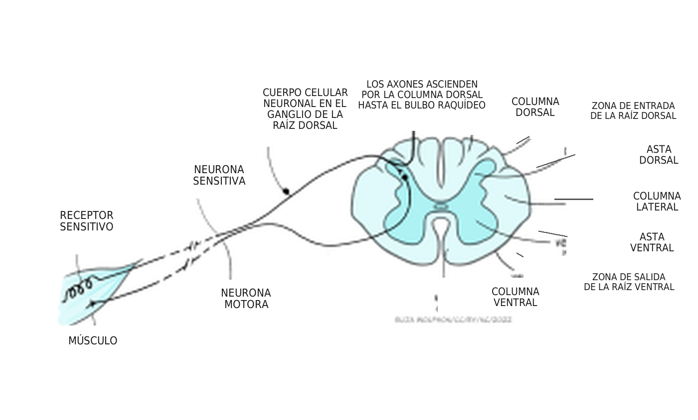
El encéfalo
El encéfalo está compuesto por el tronco encefálico, el cerebelo y el prosencéfalo.
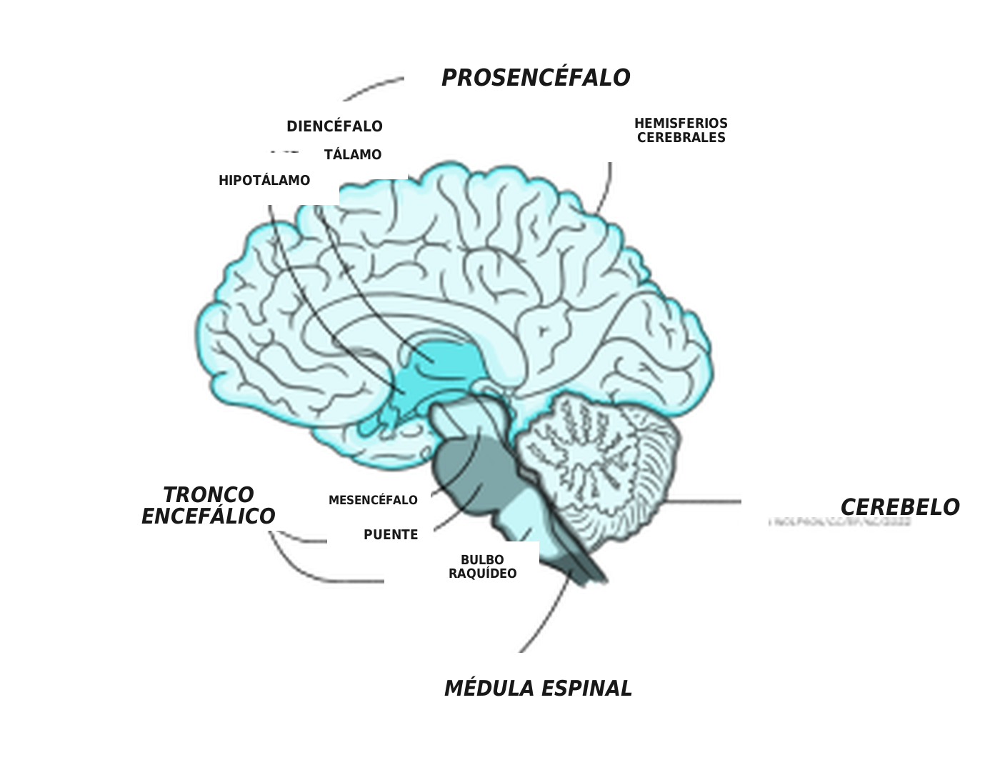
El tronco encefálico
Gran parte del volumen del tronco encefálico contiene tractos de sustancia blanca que transmiten información hacia el resto del encéfalo o hacia la médula espinal, así como hacia y desde los nervios craneales que aportan información sensitiva y motora de la cara y el cuello. En el bulbo raquídeo, las pirámides, denominadas así por su forma, son haces prominentes de sustancia blanca que conducen axones motores descendentes hacia la médula espinal. En la superficie ventral del puente se encuentra una amplia masa de fibras transversales con aspecto de puente (perpendiculares al eje del tronco encefálico y de la médula espinal), de la cual deriva su nombre (pons significa «puente» en latín). Estas fibras conectan el tronco encefálico con el cerebelo.
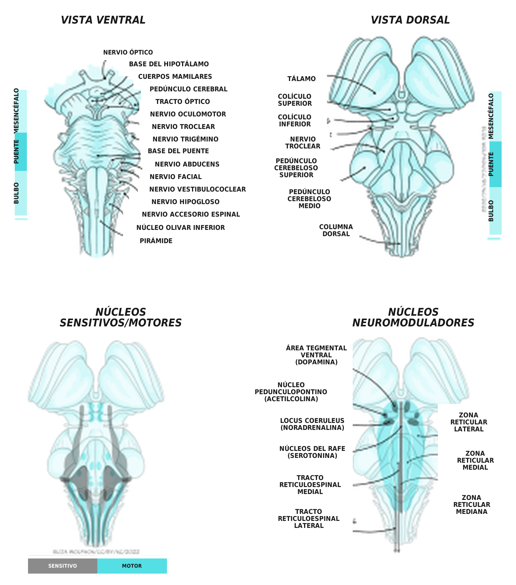
Entre los numerosos tractos de sustancia blanca que atraviesan el tronco encefálico se encuentran diversos núcleos de sustancia gris (agrupaciones de cuerpos celulares neuronales). Estos incluyen núcleos motores o sensitivos de los nervios craneales, que contienen cuerpos celulares de neuronas que se proyectan hacia los nervios craneales o reciben conexiones de ellos, así como los núcleos de la columna dorsal, donde muchas neuronas que transmiten información táctil desde la médula espinal establecen sus primeras conexiones. En el tronco encefálico también hay núcleos que producen neuromoduladores, los cuales se liberan en regiones relativamente amplias del prosencéfalo y participan en la regulación del nivel de alerta, la atención, el estado de ánimo, el movimiento, la motivación y la memoria. Muchos de estos neuromoduladores son bien conocidos y reaparecerán varias veces en otras partes de este libro: la dopamina se produce en neuronas del área tegmental ventral y de la sustancia negra pars compacta del mesencéfalo; la serotonina, en neuronas de los núcleos del rafe, que se extienden desde el bulbo raquídeo hasta el mesencéfalo; la noradrenalina, en neuronas del locus coeruleus del mesencéfalo y de la zona reticular medial del puente; y la acetilcolina, en neuronas del núcleo pedunculopontino del puente (así como del prosencéfalo basal). Otros núcleos del tronco encefálico, en particular los del bulbo raquídeo, regulan funciones esenciales para la vida, entre ellas la respiración, la frecuencia cardíaca, la deglución y la conciencia. Por lo tanto, el daño del tronco encefálico puede poner en riesgo la vida y puede producirse cuando un edema cerebral comprime esta estructura contra el cráneo.
Cerebelo
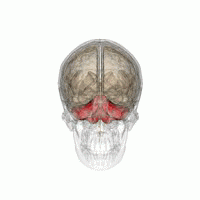
El cerebelo, o «pequeño cerebro», se encuentra por debajo de los lóbulos occipital y temporal de la corteza cerebral, y por detrás del puente.
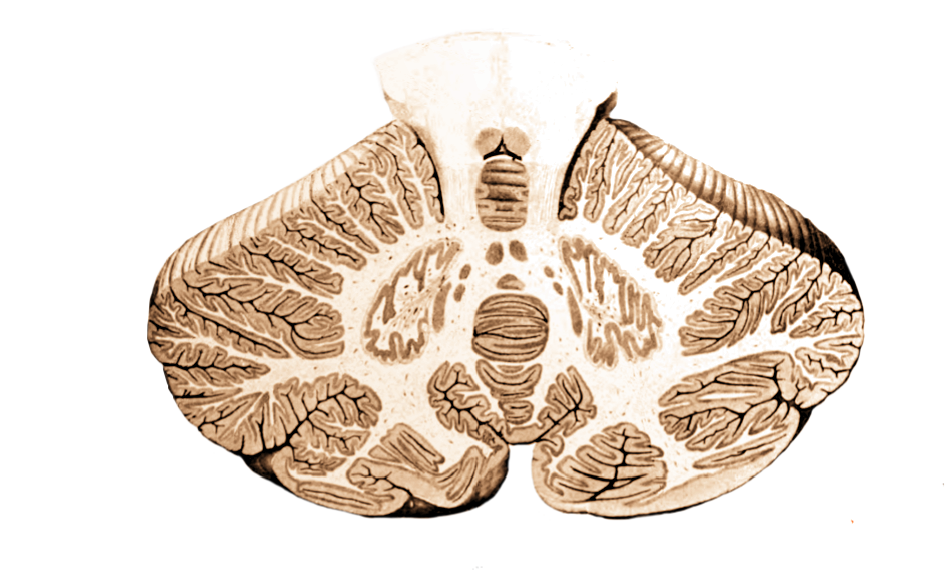
Sus células se organizan en capas bien definidas —es decir, presenta una estructura laminar—, con una conectividad particular que ha convertido al cerebelo en una estructura de gran interés para la investigación neurocientífica. Recibe aferencias mediante «fibras musgosas» provenientes de núcleos del puente, que, a su vez, reciben información sensitiva y de otros tipos procedente de amplias áreas de la corteza cerebral. Estas fibras musgosas establecen sinapsis con las células granulares —neuronas pequeñas que se agrupan densamente para formar la capa granulosa—. El cerebro humano contiene 50 mil millones de células granulares, alrededor de 3/4 del total de neuronas del cerebro. Los axones de estas células ascienden en sentido vertical desde la capa granulosa hasta la capa molecular, donde se bifurcan y se extienden en direcciones opuestas, formando una T. Los axones de distintas células granulares se alinean en paralelo y se denominan fibras paralelas.
Estas fibras paralelas establecen sinapsis con los árboles dendríticos planos y muy ramificados de las células de Purkinje. Estas son las células de salida del cerebelo y envían conexiones a los núcleos cerebelosos profundos, desde donde la información se dirige al tálamo y luego a la corteza cerebral. Las células de Purkinje también reciben aferencias sinápticas de las «fibras trepadoras», axones de células que se originan en el bulbo raquídeo y transportan información procedente de distintas regiones del cerebro, en particular sobre los procesos motores en curso.
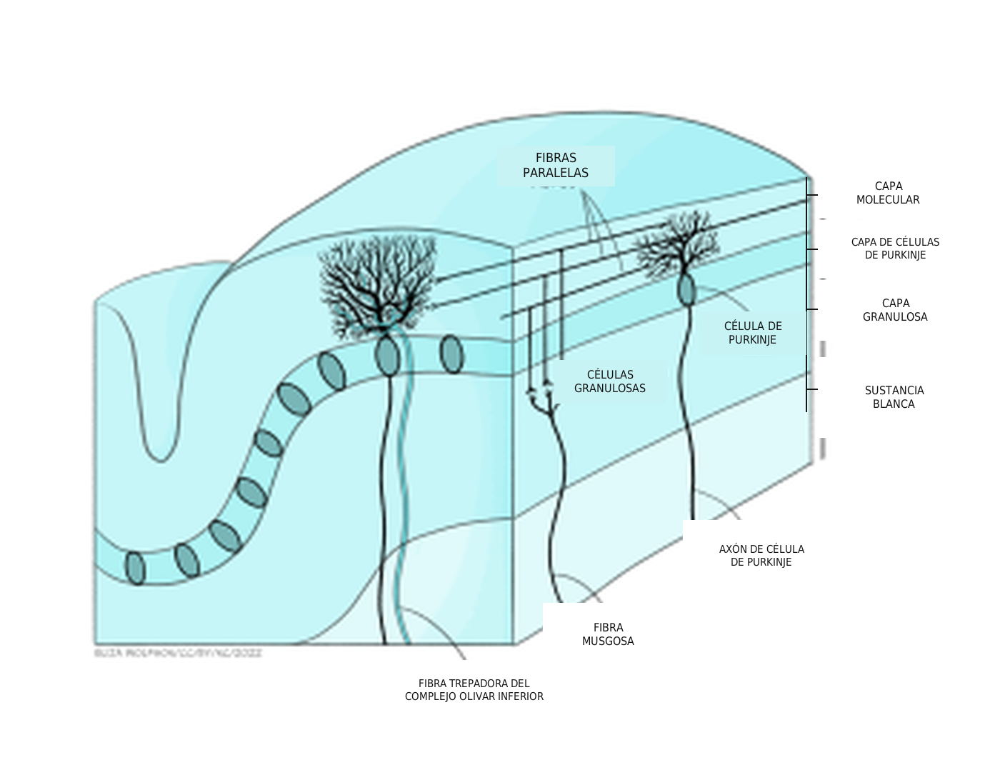
La investigación neurocientífica ha permitido examinar y comprender cómo este circuito altamente organizado media algunas de las funciones principales del cerebelo, lo que ofrece una perspectiva detallada de su funcionamiento. El cerebelo integra información sensitiva diversa y la utiliza para guiar las conductas motoras, por lo que es importante para el equilibrio y el aprendizaje motor, como aprender a andar en bicicleta o a tocar una melodía nueva en el piano. Sin embargo, aunque sus funciones sensitivomotoras son las mejor comprendidas, también recibe muchos tipos de información procedente de distintas regiones del cerebro. Los estudios de neuroimagen funcional y otros experimentos han demostrado la participación del cerebelo en procesos tan diversos como la comprensión del lenguaje, la memoria autobiográfica y la atención.
Prosencéfalo
El prosencéfalo comprende el diencéfalo y, a su alrededor, el cerebro: dos hemisferios cerebrales que contienen una capa externa —la corteza cerebral— y estructuras subcorticales como el hipocampo, los núcleos basales y la amígdala. Los dos hemisferios cerebrales están conectados entre sí por el cuerpo calloso, un tracto de sustancia blanca de gran tamaño; muchos otros tractos de sustancia blanca conectan entre sí distintas partes del prosencéfalo.
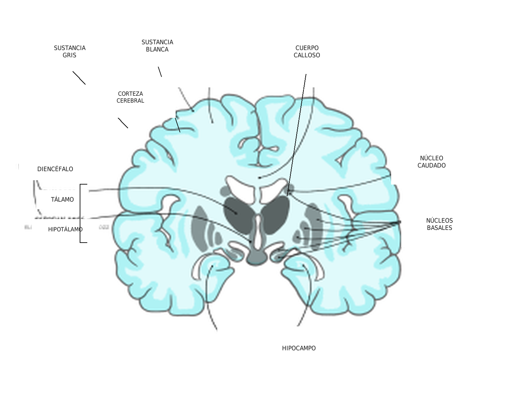
Diencéfalo
El diencéfalo se extiende desde el mesencéfalo y sus componentes principales son el tálamo y el hipotálamo.
El tálamo es un centro de distribución de información que transmite información ascendente y descendente procedente de amplias áreas del cerebro. Se organiza en núcleos especializados desde el punto de vista funcional, que procesan información de modalidades determinadas. Por ejemplo, el núcleo geniculado lateral dorsal del tálamo recibe información visual del nervio óptico y envía proyecciones a la corteza visual primaria, mientras que el núcleo geniculado medial recibe información auditiva del colículo inferior y proyecta hacia la corteza auditiva. Sin embargo, en lugar de limitarse a transmitir información en una sola dirección, una característica clave del procesamiento talámico es que los núcleos también reciben información descendente de la corteza y forman circuitos denominados bucles talamocorticales (o bucles corticotalámicos). Estos bucles talamocorticales no se limitan al procesamiento sensitivo: también incluyen áreas de orden superior y áreas motoras, y pueden incorporar estructuras adicionales en sus circuitos.
Por ejemplo, el tálamo anterior cumple una función importante en la memoria: recibe información del hipocampo, de los cuerpos mamilares del hipotálamo y de la corteza cerebral, y proyecta hacia la corteza cingulada. Los bucles talamocorticales que incorporan el cuerpo estriado y otros núcleos basales también son importantes para el control motor y la conducta motivada, mediante los núcleos talámicos ventrolateral, mediodorsal y anterior. Estos bucles, y otros similares que se abordarán al analizar otros circuitos, demuestran que la función de «entrada-procesamiento-salida» del sistema nervioso no opera en una sola dirección. Por el contrario, las salidas de una región determinada suelen retroalimentar las estructuras que aportan entradas a esa región, además de enviar señales de salida a áreas cerebrales situadas «corriente arriba».
El hipotálamo se ubica debajo del tálamo y por encima de la hipófisis. Consta de unos 22 núcleos y presenta numerosas conexiones con el tronco encefálico, la amígdala y el hipocampo. Participa en la regulación de muchos procesos homeostáticos, como el control de la alimentación y la ingesta de líquidos, la regulación de la temperatura y los ritmos circadianos, así como en el procesamiento de la emoción y la memoria y en la conducta sexual. Algunos núcleos hipotalámicos presentan dimorfismo sexual, con diferencias estructurales y funcionales entre machos y hembras. El hipotálamo puede producir cambios en la fisiología corporal tanto mediante sus proyecciones hacia el sistema nervioso autónomo a través del tronco encefálico como mediante la regulación de la liberación de hormonas a través de sus conexiones con la hipófisis adyacente. También participa en conductas motivadas, como la inmovilidad defensiva o la huida.
Corteza cerebral
En los seres humanos, la corteza cerebral presenta numerosos pliegues que maximizan su superficie y constituye la capa más externa del prosencéfalo.
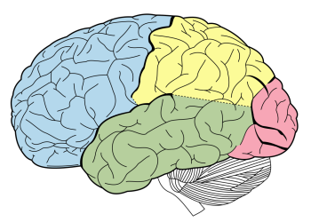
Estos pliegues forman surcos (hendiduras) y giros (prominencias) característicos. Los de mayor tamaño separan la corteza cerebral en 4 lóbulos: frontal, temporal, parietal y occipital. La mayor parte de la corteza cerebral es neocorteza (corteza nueva), compuesta por 6 capas de neuronas con distintos tipos y densidades neuronales. La capa 1 tiene muy pocos cuerpos celulares y contiene principalmente los extremos de dendritas y axones. Las capas 2 y 3 contienen cuerpos celulares de neuronas que reciben y envían proyecciones a regiones corticales cercanas. Las aferencias ascendentes que llegan a la corteza cerebral desde el tálamo terminan en la capa 4, mientras que las células que envían proyecciones descendentes a otras áreas cerebrales se encuentran en las capas 5 y 6. El grosor de estas capas varía en la corteza según la función de cada área. Las cortezas sensitivas reciben muchas aferencias y, por eso, tienen una capa 4 gruesa; las regiones motoras, en cambio, envían numerosas eferencias a regiones posteriores de la vía y presentan capas 5 y 6 gruesas. La conectividad vertical a través de estas capas es mayor que la horizontal, por lo que las neuronas de una misma «columna» vertical de la corteza tienden a compartir propiedades de respuesta (es decir, todas se activan ante el mismo tipo de estímulo).
En 1909, a partir del estudio de la citoarquitectura, es decir, de la organización de las capas celulares en la corteza, el anatomista alemán Korbinian Brodmann dividió la corteza cerebral en 52 áreas distintas, hoy denominadas áreas de Brodmann. Muchas de ellas se subdividieron posteriormente en regiones más pequeñas. Las diferencias en la organización celular de estas regiones indican diferencias en sus circuitos y en el procesamiento de la información. De hecho, se ha demostrado que muchas áreas de Brodmann corresponden a distintas especializaciones funcionales. Por ejemplo, el área 17 es la corteza visual primaria y el área 4, la corteza motora primaria. En términos generales, las funciones de las distintas regiones corticales pueden clasificarse como sensitivas, motoras o asociativas. La información sensitiva ingresa primero en las cortezas sensitivas primarias y luego se procesa en las áreas sensitivas secundarias. Cuando un área procesa información multimodal (por ejemplo, auditiva y visual), se la considera corteza de asociación. Estas áreas son importantes para numerosas funciones, desde la comprensión y la producción del lenguaje hasta el procesamiento espacial, el pensamiento abstracto, la planificación y la memoria. Por su parte, la corteza motora primaria contiene neuronas motoras que envían sus axones a la médula espinal para ejecutar movimientos voluntarios, mientras que las áreas secundarias o premotoras proyectan hacia la corteza motora primaria y contribuyen a seleccionar o coordinar los movimientos.
![Dos pilares tridimensionales seccionados: el de la izquierda muestra las capas de la corteza motora y el de la derecha, las capas de la corteza sensitiva. En ambos, la sección superior está rotulada del 1 al 3 y corresponde a la función integradora; el número 4, en el punto medio, está rotulado como entrada sensitiva (aferente), y los números 5 y 6, como salida hacia otras partes del cerebro (eferente). Las áreas rotuladas no tienen el mismo tamaño en los pilares motor y sensitivo. Debajo aparecen diagramas del cerebro desde distintas perspectivas, que muestran la arquitectura funcional de la corteza cerebral. Están numerados según las áreas de Brodmann.](../assets/media/es-fig-2-17.png)
Estas áreas funcionales definidas por su citoarquitectura pueden subdividirse aún más según su función. Por ejemplo, las cortezas sensitivas primarias presentan una organización topográfica: las partes adyacentes de la piel están representadas en sectores adyacentes de la corteza somatosensitiva —organización somatotópica—, y las regiones adyacentes de la retina están representadas en sectores adyacentes de la corteza visual primaria —organización retinotópica—. Estas representaciones pueden subdividirse aún más en columnas que procesan distintos estímulos (por ejemplo, la orientación de los estímulos visuales).
Aunque la mayoría de las áreas cerebrales son estructuralmente simétricas, algunas funciones de la corteza cerebral están lateralizadas. En primer lugar, como se mencionó antes, el procesamiento sensitivo suele ocurrir en el lado opuesto del cuerpo al que recibe la estimulación (es decir, la corteza somatosensitiva izquierda procesa los estímulos aplicados al lado derecho del cuerpo). En segundo lugar, los estudios de lesiones revelan una lateralización funcional de los flujos de información de cada lado del cerebro. Las lesiones en las vías de procesamiento visual del hemisferio izquierdo provocan déficits en la percepción de detalles finos, mientras que las lesiones en el hemisferio derecho alteran la percepción del campo visual amplio o del «panorama general». Por último, la producción y la comprensión del lenguaje suelen localizarse en el hemisferio izquierdo, en particular en las personas diestras.
Las neuronas de la corteza cerebral proyectan hacia numerosas áreas cerebrales y hacia la médula espinal, pero el blanco de proyección más frecuente de las neuronas corticales son otras neuronas corticales, en su mayoría cercanas. El 80% de las proyecciones intracorticales llega a neuronas de la misma área, y la mayoría de las conexiones entre áreas también se dirige a áreas próximas. Solo el 5% de las conexiones intracorticales es de largo alcance: se dirige a regiones corticales más distantes o atraviesa el cuerpo calloso (transcalloso) entre ambos hemisferios. Estas conexiones contribuyen a formar varias redes cerebrales de gran escala que participan en distintos aspectos de las funciones perceptivas y cognitivas (véase más adelante).
Núcleos basales
Los núcleos basales (también denominados ganglios basales) son un conjunto de núcleos subcorticales (es decir, se encuentran debajo de la corteza cerebral). Comprenden el cuerpo estriado dorsal, formado por el núcleo caudado y el putamen; el cuerpo estriado ventral, o núcleo accumbens; y los segmentos externo e interno del globo pálido. Otros dos componentes de los circuitos de los núcleos basales no se encuentran en el cerebro: el núcleo subtalámico está en el diencéfalo y la sustancia negra, en el mesencéfalo.
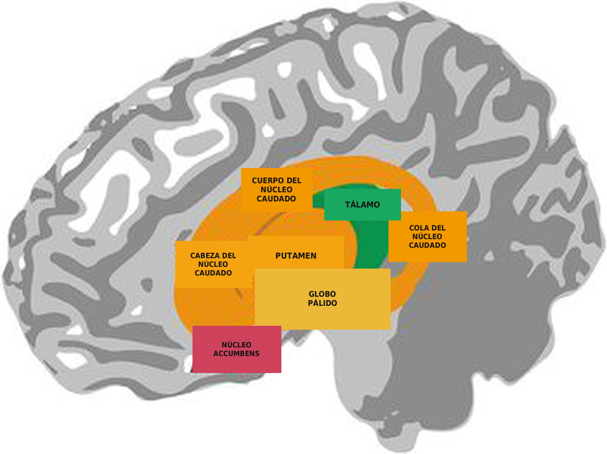
La información fluye desde amplias áreas de la corteza cerebral, atraviesa los núcleos basales y el tálamo, y regresa a la corteza cerebral. Estos bucles córtico-núcleos basales-tálamo-corticales son importantes para seleccionar acciones motoras —por ejemplo, iniciar y detener conductas— y para ciertos aspectos de la conducta motivada, es decir, para seleccionar acciones en función de la probabilidad de que produzcan consecuencias favorables o desfavorables para el individuo. Incluyen vías excitatorias e inhibitorias, cuyo equilibrio es importante para inhibir o iniciar las salidas motoras (véase Interacción con el mundo).
Las alteraciones de estos circuitos pueden provocar un desequilibrio entre los efectos facilitadores e inhibidores, como se observa en varias afecciones neurológicas, entre ellas la enfermedad de Parkinson y la enfermedad de Huntingdon, así como la esquizofrenia, el síndrome de Tourette, el trastorno obsesivo-compulsivo y la adicción (véase Disfunciones del sistema nervioso).
Hipocampo
El hipocampo es una estructura importante que interviene en la memoria episódica, el procesamiento espacial y el aprendizaje contextual.

Fig. 2.19. El hipocampo
Su estructura laminar difiere claramente de la de la corteza cerebral. Es una alocorteza, con menos capas celulares que la neocorteza. Presenta una capa densamente compactada de cuerpos celulares piramidales, por encima y por debajo de la cual hay capas que solo contienen prolongaciones dendríticas y axónicas, además de neuronas inhibitorias mucho más dispersas. Está formado por dos pliegues interconectados en forma de U, el giro dentado y el hipocampo «propiamente dicho», que se curvan juntos y conforman una elegante estructura tridimensional, semejante a un caballito de mar (hippocampus) o a un cuerno de carnero (Cornu ammonis), del cual toman su nombre los subcampos hipocampales CA1, CA2 y CA3. El hipocampo recibe la mayor parte de sus aferencias desde regiones corticales o subcorticales a través de la corteza entorrinal, y envía la mayor parte de sus eferencias hacia regiones corticales o subcorticales a través del subículo. El fórnix, otra importante vía eferente, también conecta el hipocampo, a través de CA3, con los cuerpos mamilares del diencéfalo.
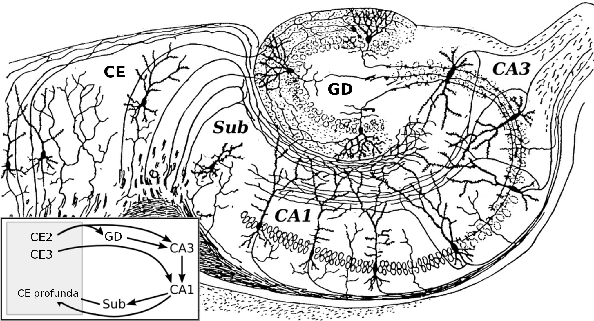
Al igual que el cerebelo, el hipocampo posee un circuito neuronal bien caracterizado que ha aportado información valiosa sobre el modo en que cumple su función. Desde la corteza entorrinal, las aferencias que llegan por la vía perforante hacen sinapsis con las células granulares del giro dentado, que a su vez envían fibras musgosas a CA3. Las neuronas piramidales de CA3 envían colaterales de Schaffer (ramificaciones axónicas) a CA2 (que es pequeña) y CA1, además de colaterales recurrentes, es decir, ramificaciones axónicas que vuelven a hacer sinapsis sobre células de CA3. Se considera que los cambios producidos durante el aprendizaje en la fuerza de las conexiones de estas subregiones son importantes para ciertos aspectos de la formación y la recuperación de recuerdos, en particular para la capacidad de recordar más elementos de un acontecimiento o estímulo cuando solo se presenta una parte de este (completamiento de patrones), y para recordar acontecimientos o estímulos como diferentes entre sí (separación de patrones).
El daño del hipocampo produce déficits de memoria y aparece en etapas tempranas de la enfermedad de Alzheimer. También pueden producirse daño hipocampal selectivo y amnesia asociada cuando el cerebro queda privado de oxígeno, por ejemplo, durante el parto. Debido a sus conexiones colaterales recurrentes, por las cuales las neuronas excitatorias pueden excitarse a sí mismas, el hipocampo también es un foco frecuente de actividad epiléptica, en la que los circuitos neuronales se hiperactivan y producen crisis epilépticas.
Amígdala
La amígdala, cuyo nombre se debe a su forma de almendra, se encuentra junto al hipocampo, por debajo de la corteza cerebral y dentro del lóbulo temporal (véase la Fig. 2.19).
Es importante para el procesamiento de las emociones y para la influencia que estas ejercen sobre el aprendizaje; se ha demostrado que interviene especialmente en el aprendizaje del miedo. Está formada por un complejo de núcleos diferentes, entre ellos los núcleos basolaterales, corticomediales y centromediales. Recibe aferencias de amplias regiones de la corteza sensitiva y prefrontal, además de información del hipocampo e información visceral proveniente de núcleos del tronco encefálico, lo que le permite integrar información sobre el estado del cuerpo con información contextual. Sus eferencias se dirigen a la corteza cerebral, en particular a las cortezas prefrontal y cingulada, así como al hipocampo, el estriado ventral, el tálamo y el hipotálamo. Esta conectividad le permite generar respuestas emocionales adecuadas para un contexto determinado. Por ejemplo, cuando aparece un estímulo asociado con un castigo, puede generarse una respuesta de miedo mediante la modificación de la liberación hormonal a través del hipotálamo, lo que desencadena conductas de inmovilidad y la activación del sistema nervioso simpático a través del tronco encefálico.
Ideas clave: sistema nervioso central
- El SNC está compuesto por el encéfalo y la médula espinal
- Podemos describir una ubicación en el SNC mediante los términos de orientación lateral y medial, anterior y posterior, superior e inferior, dorsal y ventral, y rostral y caudal
- La médula espinal transporta información entre el encéfalo y la periferia en ambos sentidos, y también realiza cierto procesamiento de información en su sustancia gris central
- El tronco encefálico contiene numerosos tractos de sustancia blanca y núcleos que procesan información motora y sensitiva, así como neuronas que se ocupan de funciones reguladoras automáticas, como el control de la frecuencia cardíaca y la respiración
- El cerebelo es una estructura laminar con un circuito distintivo que sustenta el aprendizaje sensoriomotor
- El tálamo es un centro de distribución de información que la transfiere desde la periferia hacia el encéfalo y viceversa, además de participar en numerosos circuitos talamocorticales con extensas regiones corticales
- El hipotálamo contiene numerosos núcleos que cumplen funciones importantes en el control de la homeostasis, como la regulación de la sed y el apetito, y también interviene en la memoria
- La corteza cerebral tiene 6 capas cuyo grosor varía entre distintas regiones funcionales. La corteza cerebral se conecta con regiones subcorticales, pero las neuronas se conectan con mayor frecuencia con otras neuronas corticales
- Los núcleos basales son núcleos subcorticales importantes para iniciar y seleccionar conductas motoras y para la conducta motivada
- El hipocampo es una estructura importante para la memoria y posee un circuito distintivo que sustenta su función en la formación de asociaciones
- La amígdala está estrechamente conectada con la corteza, el hipocampo y el tronco encefálico, y es importante para el aprendizaje y las conductas emocionales.
Estructuras encefálicas no neuronales
Además de estas diversas regiones encefálicas, es importante conocer otras estructuras de la anatomía del encéfalo para comprender la fisiología general de este órgano.
Ventrículos
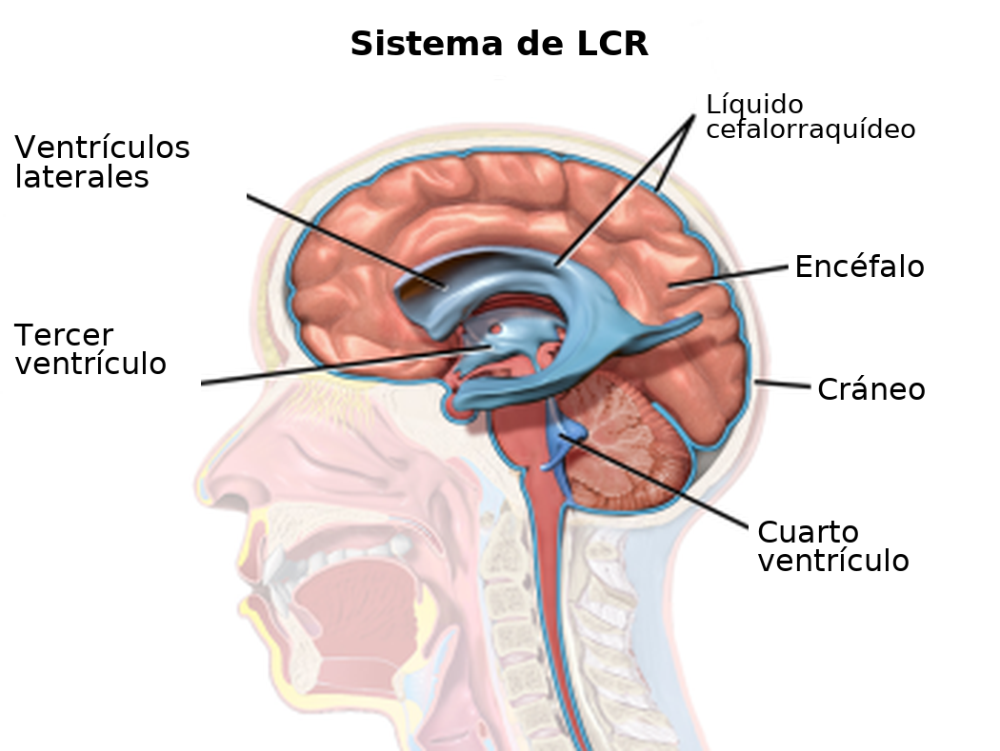
Líquido cefalorraquídeo y meninges
En el encéfalo y la médula espinal hay una serie de espacios conectados que contienen líquido cefalorraquídeo (LCR). El conducto central de la médula espinal se prolonga por el tronco encefálico y luego se ensancha en la región del puente para formar el cuarto ventrículo. En el extremo superior del cuarto ventrículo, otro conducto estrecho, el acueducto cerebral, se conecta con una cavidad más amplia, el tercer ventrículo, a la altura del diencéfalo. Desde el tercer ventrículo, otros dos conductos estrechos se conectan con los grandes ventrículos laterales, que se extienden hasta zonas profundas del cerebro. El LCR que llena los conductos y ventrículos es producido por células ependimarias que revisten los ventrículos en una estructura membranosa especializada denominada plexo coroideo. Estas células ependimarias rodean los capilares del sistema vascular y producen LCR mediante la filtración de la sangre. La composición del LCR es similar a la del plasma sanguíneo: consiste principalmente en agua, pero contiene iones y glucosa (hacé clic acá para consultar una tabla con más información), aunque su contenido de proteínas es menor que el del plasma.
El LCR fluye desde el cuarto ventrículo hacia el espacio situado entre las membranas o meninges que recubren el encéfalo. Hay tres meninges: la piamadre es una membrana delicada que recubre directamente el encéfalo y la médula espinal. Por encima de la piamadre hay un espacio lleno de líquido y, a continuación, se encuentra la membrana aracnoides, denominada así por las hebras semejantes a una telaraña que la conectan con la piamadre a través de este espacio subaracnoideo. Por encima de la aracnoides se encuentra una membrana externa resistente, la duramadre, que sostiene grandes vasos sanguíneos que drenan la sangre del encéfalo hacia el corazón. El LCR fluye desde los ventrículos hacia el espacio subaracnoideo, luego circula alrededor del encéfalo y finalmente drena hacia las venas de los senos durales. El LCR amortigua los impactos y protege al encéfalo de lesiones provocadas por golpes en la cabeza; además, elimina productos de desecho metabólico del encéfalo hacia la sangre.
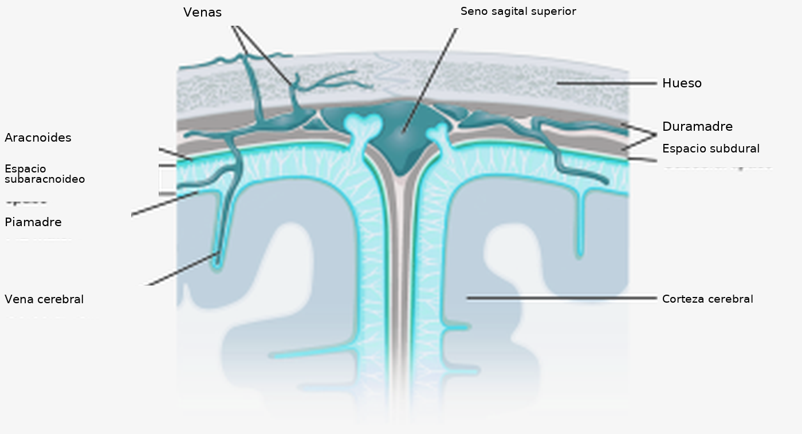
Vasculatura
El encéfalo es un órgano con una gran demanda energética. Solo representa el 2% de la masa corporal, pero utiliza el 20% de la energía cuando el cuerpo está en reposo (es decir, cuando los músculos no están activos). Depende de un suministro sanguíneo constante de oxígeno y glucosa para sostener las neuronas; una interrupción del flujo sanguíneo al encéfalo provoca la pérdida de conciencia en menos de 10 segundos. Para aportar un flujo constante de sangre oxigenada, el encéfalo cuenta con una vasculatura compleja y estrechamente regulada que dirige la sangre hacia las regiones encefálicas más activas. Cuatro arterias suministran sangre oxigenada al encéfalo y forman un circuito, el polígono de Willis, que permite compensar la reducción del flujo sanguíneo en una arteria mediante la redistribución del flujo proveniente de las demás. Varias arterias de gran calibre se ramifican desde el polígono de Willis para irrigar distintas regiones del encéfalo. Las ramas de estas arterias principales forman arterias y arteriolas cada vez más pequeñas, que atraviesan el espacio subaracnoideo antes de penetrar en el encéfalo y ramificarse aún más hasta formar una densa red capilar.
En cada milímetro cúbico de tejido encefálico hay una sorprendente longitud de entre 1 y 2 metros de capilares. Sin embargo, estos capilares tienen menos de 10 micrómetros de diámetro, por lo que solo ocupan alrededor del 2% del volumen encefálico. Esto significa que, en la corteza cerebral, cada neurona se encuentra a apenas unos 10-20 micrómetros del capilar más cercano. Por lo tanto, esta densa red vascular puede suministrar oxígeno y glucosa a muy poca distancia de las neuronas activas.
Ciertos mecanismos especializados permiten ajustar con precisión el suministro sanguíneo a las regiones encefálicas que más lo necesitan. Las células de músculo liso o los pericitos de las paredes de los vasos sanguíneos pueden dilatarse o contraerse para regular el flujo de sangre a través del vaso. Las neuronas activas y los astrocitos producen moléculas que dilatan las células de músculo liso y los pericitos de las arteriolas y los capilares locales, lo que aumenta el flujo sanguíneo hacia esas regiones de mayor actividad. De hecho, este aumento del flujo sanguíneo suele aportar más oxígeno del necesario, por lo que los niveles de oxígeno en sangre aumentan en las regiones encefálicas activas. Este aumento del oxígeno sanguíneo da origen a la señal BOLD (dependiente del nivel de oxígeno en sangre), que puede detectarse mediante resonancia magnética y suele utilizarse como indicador indirecto de la actividad neuronal en experimentos que estudian la función de distintas regiones encefálicas.
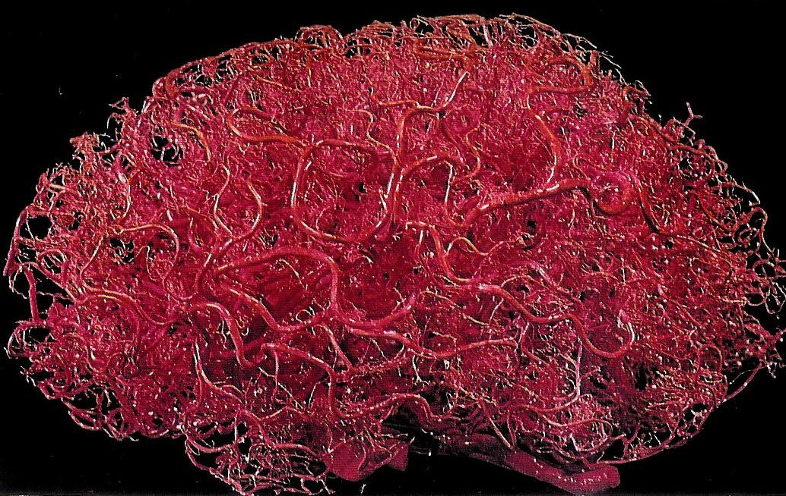
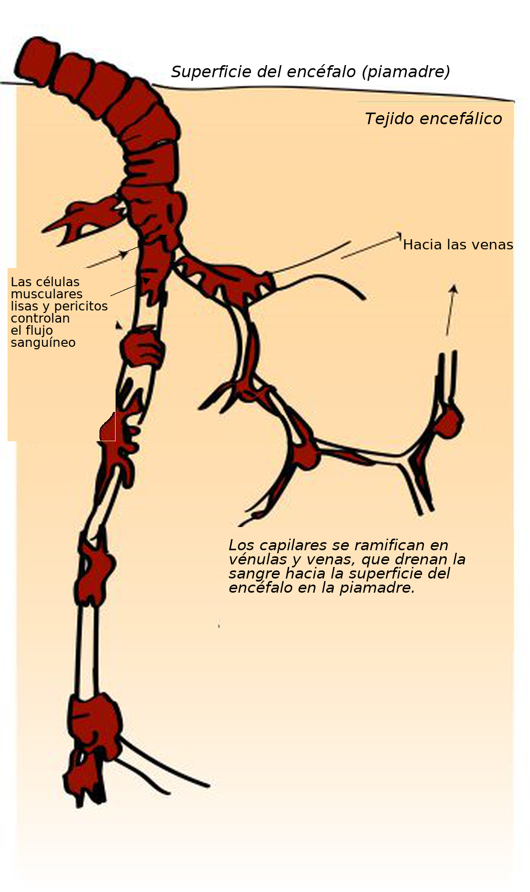
Otra característica especializada del sistema vascular encefálico es la barrera hematoencefálica (BHE). Las células endoteliales que revisten los vasos sanguíneos del encéfalo están unidas entre sí de manera muy estrecha y expresan relativamente pocas proteínas transportadoras que permitan trasladar moléculas desde la sangre hacia el encéfalo. Por eso, a las moléculas y células les resulta más difícil acceder al encéfalo desde la sangre, lo que lo protege de las toxinas circulantes y de las células inmunitarias.
La vasculatura encefálica puede verse afectada en varias afecciones neurológicas, lo que provoca alteraciones de la función cerebral. En un accidente cerebrovascular (ACV) isquémico o hemorrágico, disminuye el suministro de sangre al encéfalo debido a la obstrucción o la rotura de los vasos sanguíneos que lo irrigan. Esto reduce el oxígeno disponible para la región encefálica irrigada por el vaso lesionado, daña las neuronas de esa región y causa los déficits funcionales correspondientes. En otras enfermedades, la disminución del flujo sanguíneo es menos grave. En la enfermedad de Alzheimer se produce una disminución del flujo sanguíneo cerebral muchos años antes de que aparezcan los síntomas. Aún no se sabe qué relación tiene esta disminución del flujo sanguíneo con el desarrollo de la enfermedad de Alzheimer, pero entre los posibles factores se encuentran una menor capacidad para eliminar proteínas tóxicas del encéfalo, un aumento de la permeabilidad de la BHE o una falta crónica de aporte de oxígeno.
Ideas clave: estructuras cerebrales no neuronales
- Los ventrículos son cavidades del encéfalo que contienen líquido cefalorraquídeo (LCR)
- El encéfalo está rodeado por 3 capas de meninges
- El LCR fluye entre los ventrículos y el espacio subaracnoideo de las meninges
- Los vasos sanguíneos del encéfalo están especializados para dirigir el flujo sanguíneo hacia las regiones cerebrales activas y regular en qué medida las moléculas y células de la sangre pueden acceder al encéfalo.
En conjunto, en este capítulo aprendiste los principios generales del flujo de información en el cerebro, así como algunas de las principales estructuras neuronales y no neuronales que median esta transferencia de información. A continuación, exploraremos las células señalizadoras y no señalizadoras del sistema nervioso para comprender cómo sustentan el flujo y el procesamiento de la información.
Referencias
Iturria-Medina, Y., Sotero, R. C., Toussaint, P. J., Mateos-Pérez, J. M., Evans, A. C., & The Alzheimer’s Disease Neuroimaging Initiative. (2016). Early role of vascular dysregulation on late-onset Alzheimer’s disease based on multifactorial data-driven analysis. Nature Communications 7, 11934. https://doi.org/10.1038/ncomms11934
Kwon, Diana. The mysterious, multifaceted cerebellum. (2020). Knowable Magazine. https://doi.org/10.1146/knowable-093020-2